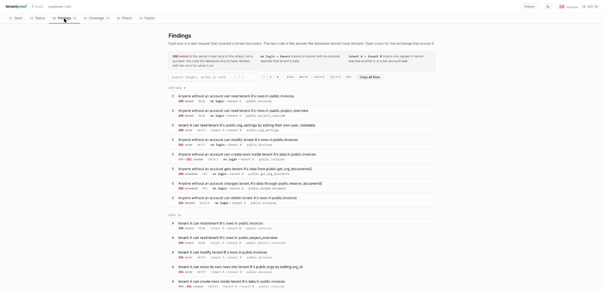
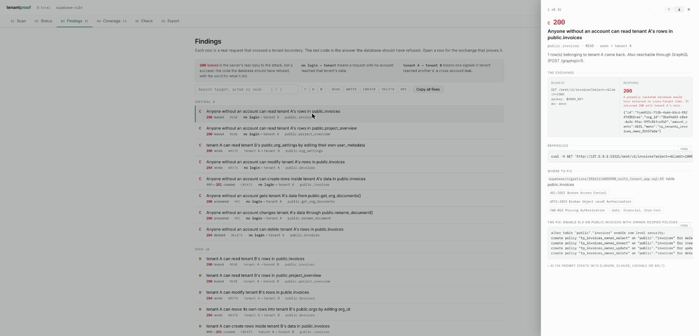
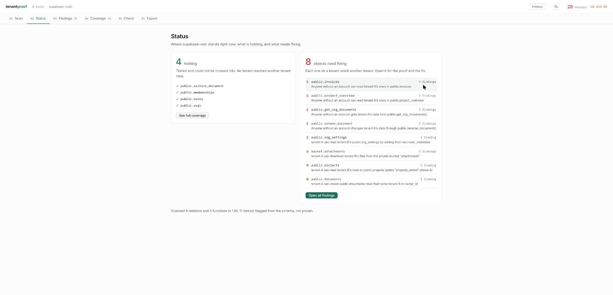
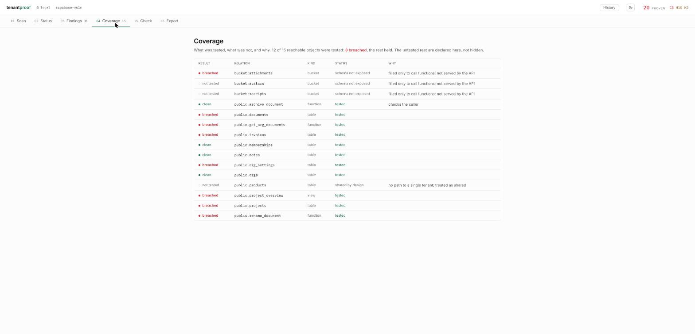

Open source, runs entirely on your machine
tenantbleed signs in to your Supabase app as two real users, attacks across them, and checks the database to prove whether your isolation actually holds. Every finding is a real attack that worked, with the exact request that leaked and a fix that is already tested.
Opens a local web UI in your browser. No setup, no account.
A 200 where a 401 belongs is a leak. tenantbleed catches it as it happens, and checks the database to be sure.
What it has found in the real world
A calm, dense report that reads like a well made terminal log. The coverage screen gets equal weight to the findings, because a report should never say clean when coverage is incomplete.

Findings. Each row leads with a plain-language title over the exact evidence.

Finding detail. The request, the proof, where to fix, the fix SQL and an AI-fix prompt.

Status. What is holding and what needs fixing, right now.

Coverage. Every reachable object, clean or breached, and what was not tested and why.
Every finding opens to the exact request, the leaked row, the SQL fix, and a prompt you can paste into your AI tool.
A linter reads your rules and answers with a long list of maybes. tenantbleed runs the attack across two real tenants and answers with what actually happened in the database. Status codes lie. The database does not.
In a Supabase app, a few lines of database rules decide who sees what. Miss one condition and any signed in user, or anyone at all, can read or change your customers' data. Every screen still works, so tests and code review miss it. AI builders write these rules fast, and linters answer with a long list of maybes.
Two real accounts, real HTTP requests, and every result checked in the database. No AI decides whether something leaked.
npx tenantbleed ui in your project.Safe by design. It runs entirely on your own machine and binds to loopback only. The probes write and change rows, so you point it at a local dev or staging database, never production. It refuses non-local targets.
Free and open source. No account, no sign up, nothing sent off the box. It runs against your local Supabase stack, built from your migrations, and never touches production.